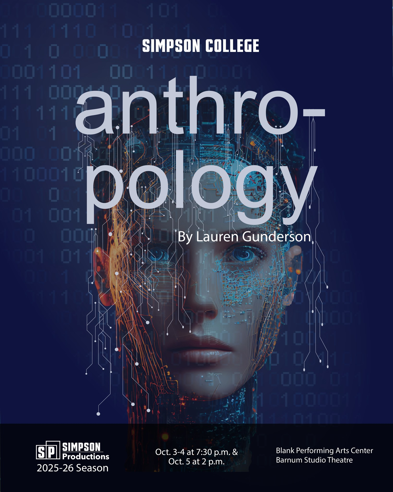
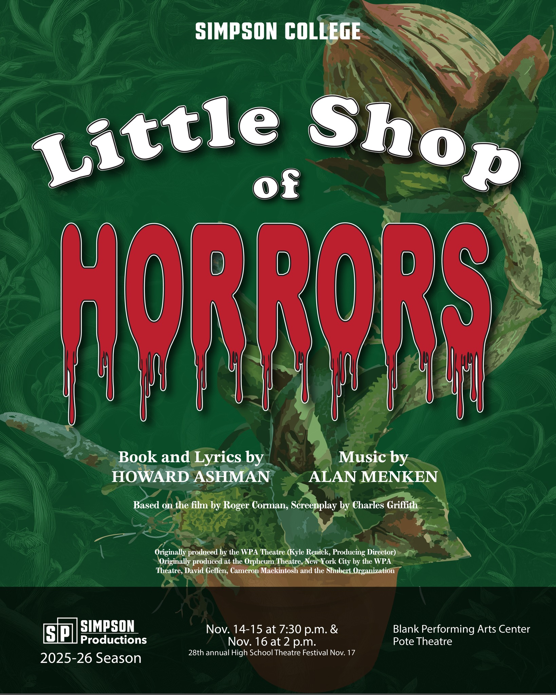
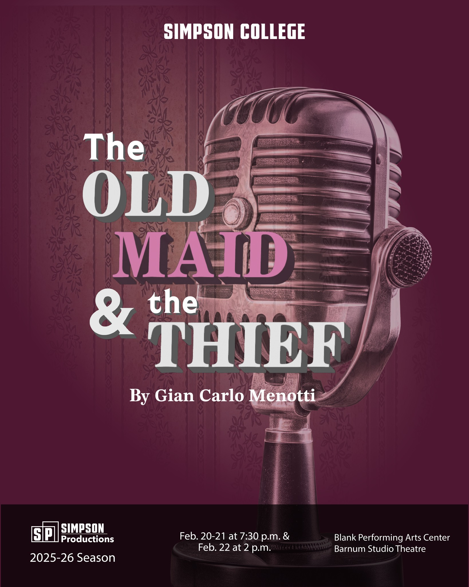
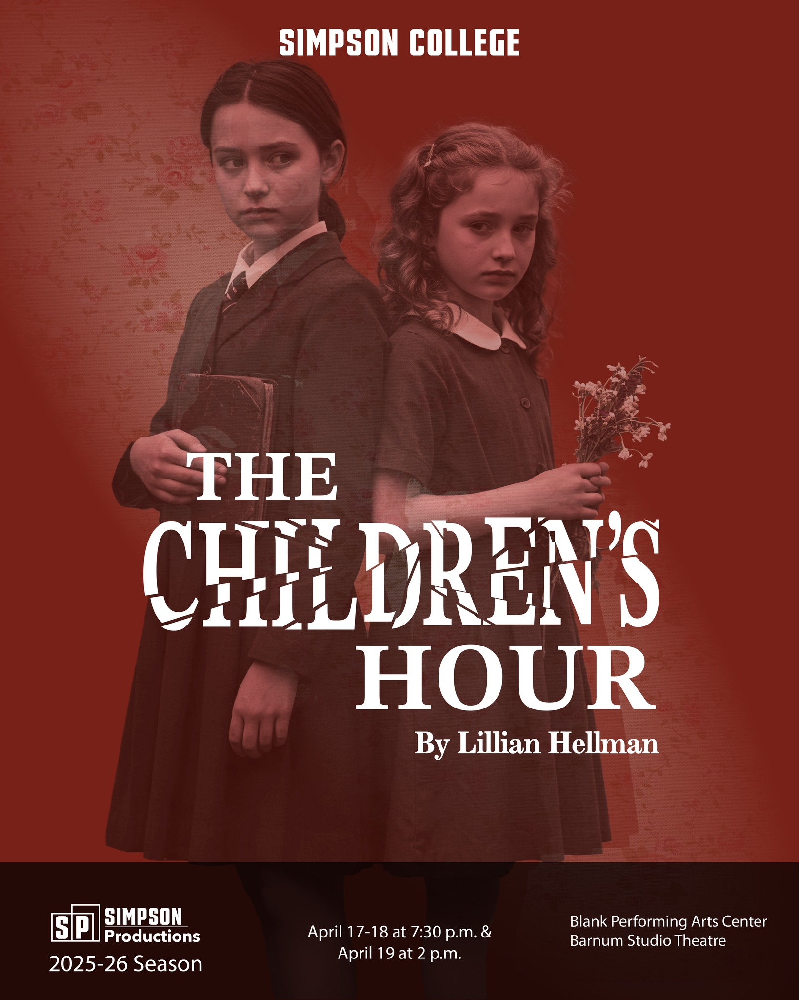

2026–2027 Season
Little Red Riding Hood
Month: October 2026
Director: Ann Woldt
Performance Space: Barnum Studio and on the road!
Synopsis: Seymour Barab's opera, Little Red Riding Hood, is a lively and imaginative retelling of the classic fairy tale. When Little Red sets out through the forest to bring treats to her grandmother, she steps into the unknown—meeting a wolf who pretends to be kind but has other plans. In this version, the wolf’s weakness for sweets adds a humorous twist, ultimately helping Red and her grandmother outsmart him.
Showtimes: To be announced
Two Gentlemen of Verona
Month: November 2026
Director: Jennifer Ross Nostrala
Performance Space: Pote Theatre
Synopsis: Two best friends, Valentine and Proteus, leave home to chase opportunity and love. Valentine falls for Silvia—but when Proteus arrives, he betrays his friend by also pursuing her, despite already being in love with Julia back home. Disguises, mixed loyalties, and a band of outlaws complicate everything until the truth comes out. In the end, friendships are (somewhat abruptly) repaired, lovers are reunited, and everyone heads toward a hopeful resolution. And there is a dog.
Showtimes: To be announced
FSP 26 Thornton Wilder
Month: December 2026
Director: Student Directors
Performance Space: Barnum Studio
Synopsis: The Festival of Short Plays returns next year with a focus on the work of American playwright and novelist Thornton Wilder. Known for Our Town and The Skin of Our Teeth, the festival of short plays will focus on Wilder's one-acts (to be determined) and highlight the work of the student company.
Showtimes: To be announced
Orlando
Month: February 2027
Director: Kara Raphaeli
Performance Space: Barnum Studio
Synopsis: An adaptation of the “longest and most charming love letter in literature,” written by Virginia Woolf for her lover, Vita Sackville-West, Orlando is a theatrical, wild, fantastical trip through space, time and gender. Orlando’s adventures begin as a young man, when he serves as courtier to Queen Elizabeth. Through many centuries of living, he becomes a 20th-century woman, trying to sort out her existence. This fresh stage adaptation from Sarah Ruhl uses narrative and a chorus to enact lyrical, instant and whimsical transformations as Orlando travels through countless epochs.
Showtimes: To be announced
Pippin
Month: April 2027
Director: Jennifer Ross Nostrala
Performance Space: Pote Theatre
Synopsis: Heir to the Frankish throne, the young prince Pippin is in search of the secret to true happiness and fulfillment. He seeks it in the glories of the battlefield, the temptations of the flesh and the intrigues of political power (after disposing of his father, King Charlemagne the Great). In the end, though, Pippin finds that happiness lies not in extraordinary endeavors, but rather in the unextraordinary moments that happen every day.
Showtimes: To be announced
2025-2026 Season

anthropology
Dates: October 3-5, 2025
Director: Ann Woldt
Cast: Cade Clark, Jules Low, Anastasia Peron, Piper Jackman
Synopsis: Merril has gone through what no sister should ever go through- the disappearance of her sister, Angie. In an effort to help manage her grief, Merril assembles all the digital material that Angie has left behind and creates a 'virtual Angie'. Virtual Angie is helpful until it begins to unravel the real Angie's disappearance.
Ticket Link: Buy Tickets
Showtimes: Friday and Saturday at 7:30 PM, Sunday at 2:00 PM.

Little Shop of Horrors
Dates: November 14-17, 2025
Director: Jennifer Ross Nostrala
Cast: Harley Andrews, Diego Solorio, Leah Wilson, Jasper McGrath, Elaine Frey, Michael Thacker, Maxwell Wearmouth-Gweah, Aaron Scholes, Ben Hodges, King Barnett
Synopsis: The story follows nerdy, downtrodden florist assistant Seymour Krelborn, who finds fame, fortune, and love with his coworker Audrey after discovering a strange, talking plant he names Audrey II. The plant demands human blood to grow, ultimately threatening world domination.
Ticket Link: Buy Tickets
Showtimes: Friday and Saturday at 7:30 PM, Sunday at 2:00 PM.

The Old Maid and the Thief
Dates: February 20-22, 2026
Director: Ann Woldt
Cast: Jasper McGrath, Elaine Frey, Hannah Larson, Maxwell Wearmouth-Gweah, Erick Randall, Hunter Weppler, Lola Vincent
Synopsis: Miss Todd, a lonely spinster, and her maid, Laetitia, who take in a handsome beggar named Bob. Believing him to be an escaped convict, they succumb to temptation and, driven by love and fear, turn to stealing to keep him, culminating in a ironic twist where the women are robbed by their guest.
Ticket Link: Buy Tickets
Showtimes: Friday and Saturday at 7:30 PM, Sunday at 2:00 PM.

The Children's Hour
Dates: April 17-19, 2026
Director: Kara Raphaeli
Cast: Piper Jackman, Natalie Spencer, Paisha Goodrich, Diego Solorio, Robyn Aguilar, Anastasia Peron, Jules Low, Lola Vincent, Kaeding Phillips, Sierra Wood, Hannah Dank, Michael Thacker
Synopsis: The story follows Karen Wright and Martha Dobie, who operate a successful New England boarding school. Their lives are destroyed when a malicious student, Mary Tilford, spreads a false rumor that they are having a lesbian affair, leading to scandal, ruin, and ultimately, tragedy.
Ticket Link: Buy Tickets
Showtimes: Friday and Saturday at 7:30 PM, Sunday at 2:00 PM.